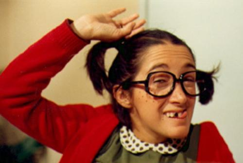
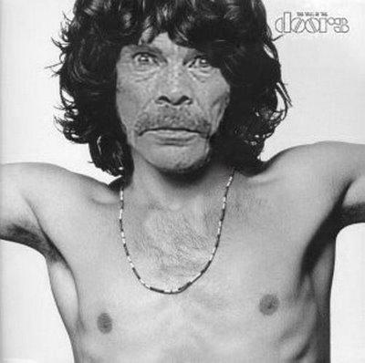
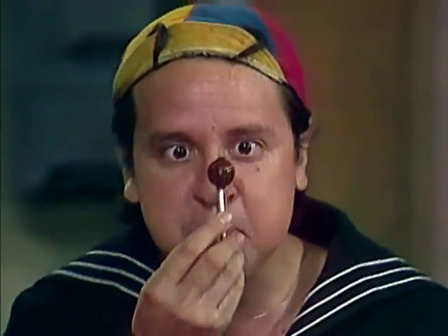

Interpretado por: Roberto Goméz Bolaños.
Descrição: Chaves é o personagem principal que dá nome ao seriado. Um garoto pobre, órfão e muito atrapalhado, sempre com as mesmas roupas velhas e apertadas e que sempre entra no seu famoso barril para se esconder. Ao contrário do que todos pensam, ele não mora no barril e seu nome não é Chaves. Ele mora na casa número 8 e seu verdadeiro nome é um mistério, pois sempre que perguntam seu nome, outra pessoa aparece e interrompe a conversa.
Frases: "Isso, isso, isso!" - "Foi sem querer querendo!" - "Ninguém tem paciência comigo!" - "É que me escapuliu!" - "Zas, zas e zas...

Interpretado por: Maria Antonieta de las Nieves.
Descrição: É uma menina baixinha, sardenta e muito esperta, sempre arranjando uma maneira de se aproveitar da ingenuidade (para não dizer burrice) do Chaves e do Quico.
Frases: "Papaízinho lindo do meu coração..." / "...me dá um dinheiro para mim comprar um pirulito?" / "O que você tem de burro, você tem de burro" / "Pois é, pois é, pois é...".
Apelidos: Micróbio, balguelinha sem-graça, sardenta, etc...

Interpretado por: Ramón Gómez Valdez Castillo.
Descrição: Talvez o personagem favorito dos fãs do seriado, ele é um cara muito simples que está sempre fazendo bicos e trambiques para sobreviver. Vive fugindo do Senhor Barriga para não pagar o aluguel da sua casa onde mora junto a sua filha Chiquinha. Sempre foge também da Dona Florinda para não apanhar, pois sempre leva culpa pelas trapalhadas feitas pelo Chaves.
Frases: "Que que foi, que que foi, que que há?" / "Só não te dou outra porque..." / "Não existe trabalho ruim, ruim é ter que trabalhar!" / "As pessoas boas devem amar seus inimigos."
Apelidos: Chimpanzé reumático, lombriga esticada, pernas de saracura...

Interpretado por: Carlos Villangrán Eslavan.
Descrição: É um garoto bobo, mimado e bochechudo. Tem nove anos de idade e é o melhor amigo do Chaves. Mora na casa número 14 com sua mãe, Dona Florinda. Está sempre esperando por sua bola quadrada.
Frases: "Cale-se, cale-se, cale-se, você me deixa louco!" / "Gentalha, Gentalha, pruuuuuf!" / "Você Não vai com a minha cara?" / "Você quer? Então compra!" / "Mamãe!" / "Da parte de quem?" / "Que coisa, não?"
Apelidos: bochechas de mamão macho, bochechas de bulldog belho, mocorongo almofadinha e etc...